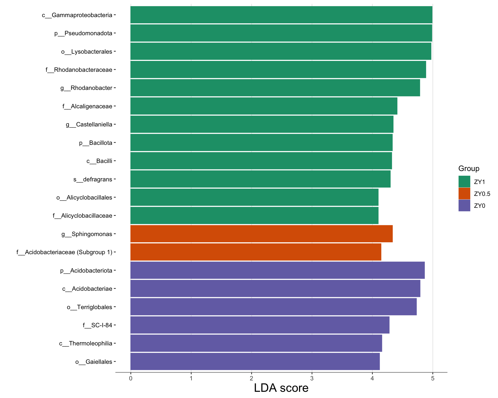
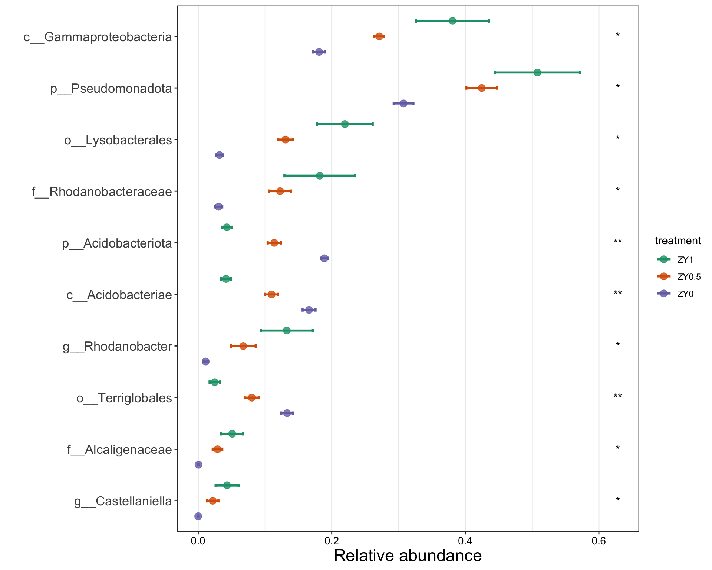
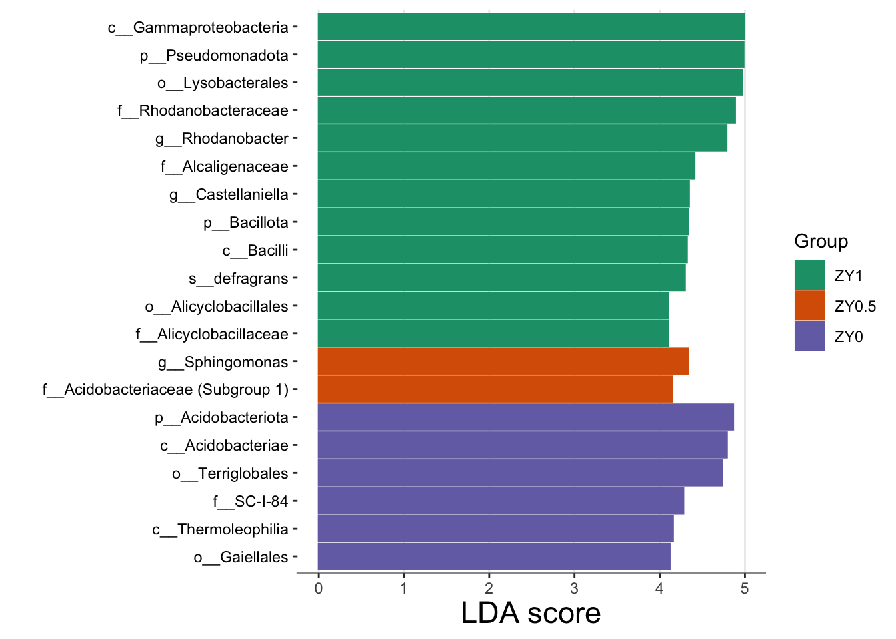
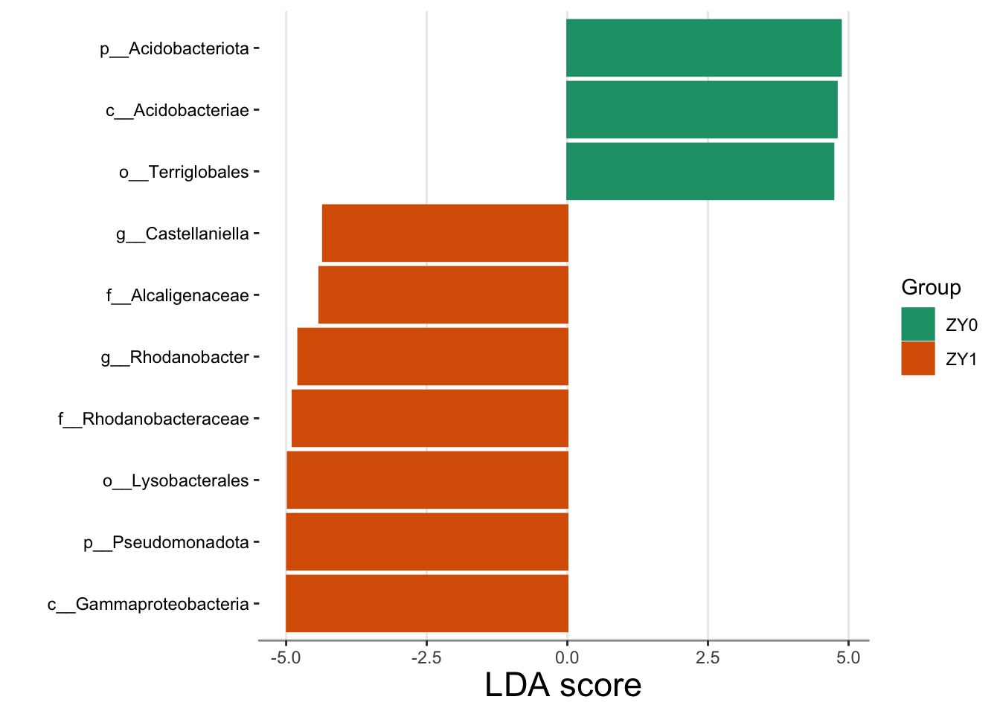
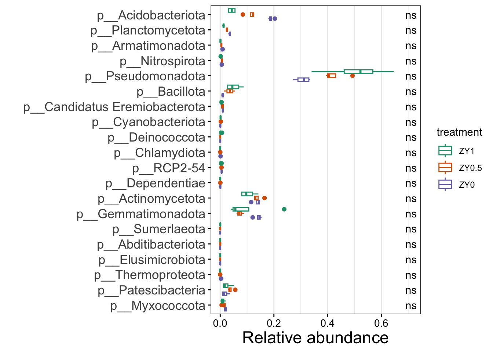

5 菌群差异分析
5.1 概述
差异丰度分析（Differential Abundance Analysis）旨在识别在不同实验条件或处理组之间丰度显著变化的微生物类群，即”生物标志物”（Biomarkers）。这是微生物组研究中最关键的步骤之一，直接关联到实验处理的生物学效应。
5.1.1 差异分析的科学目标
- 识别响应类群：发现对处理条件敏感的关键微生物
- 解析功能变化：结合分类群的功能特征，推断处理对生态系统功能的影响
- 开发生物标志物：为环境监测、疾病诊断等应用提供指示物种
- 验证科学假设：统计验证在物种组成分析中观察到的趋势
5.1.2 常用差异分析方法
由于微生物组数据的特殊性（稀疏性、组成性、过度离散），多种统计方法被开发用于差异分析：
| 方法 | 特点 | 适用场景 |
|---|---|---|
| LEfSe | 结合统计检验和 LDA 分数 | 经典方法，适合多组比较 |
| ANCOM-BC2 | 校正组成性偏倚 | 高灵敏度，推荐首选 |
| DESeq2 | 基于负二项分布 | 适合大样本量 |
| MetagenomeSeq | 零膨胀对数正态模型 | 适合稀疏数据 |
| Wilcoxon/KW | 非参数检验 | 简单稳健，不考虑组成性 |
5.1.3 方法选择建议
- LEfSe：作为经典方法，适合初步探索和可视化
- ANCOM-BC2：当前推荐的首选方法，对组成性效应校正较好
- 多种方法比较：不同方法可能产生不同结果，建议运行多种方法取交集
5.2 流程
在 microeco 包中，差异分析通过 trans_diff 类实现，主要流程如下：
- 创建分析对象：指定方法和参数
- 运行分析：自动执行统计检验
- 结果可视化：绘制条形图、误差线图、系统发育树图等
- 结果解读：结合生物学知识解释显著差异的分类群
注意事项：
- 分类表必须经过
tidy_taxonomy()处理，确保格式统一 - 不同方法对数据的假设不同，需根据数据特点选择
- 多重检验校正（FDR/Benjamini-Hochberg）是必需的
5.3 构建 microtable 对象
这里使用 microeco 软件包进行数据分析。
首先需要从数据保存的目录读取数据，并构建 microtable 对象。
PATH = "data/amplicon/processed"
list.files(PATH, full.names = TRUE)#> [1] "data/amplicon/processed/asv.fasta"
#> [2] "data/amplicon/processed/asvtab.csv"
#> [3] "data/amplicon/processed/metadata.csv"
#> [4] "data/amplicon/processed/taxtab.csv"metadata_file = file.path(PATH, "metadata.csv")
otu_table_file = file.path(PATH, "asvtab.csv")
tax_table_file = file.path(PATH, "taxtab.csv")
sequence_file = file.path(PATH, "asv.fasta")5.3.1 载入包
library(tidyverse)
library(microeco)
theme_set(theme_bw())5.3.2 OTU 表
otu_table = read_csv(otu_table_file)
otu_table = column_to_rownames(otu_table, var = names(otu_table)[1])在 microeco 包（以及大多数 R 语言生物信息包）的规范中，microtable 对 otu_table 的格式有严格要求：行必须是 Taxa（ASV/OTU），列必须是 Samples。
如果你的数据正好反过来了（行是样品，列是 ASV），需要在传入 otu_table 之前，使用 t() 函数对其进行转置，并确保它仍然是一个 data.frame。
otu_table <- as.data.frame(t(otu_table))为了让你直观理解 microtable 的结构逻辑，可以参考下图的对应关系：
- OTU Table: 行名必须对接 Taxonomy Table 的行名（即 ASV ID）。
- OTU Table: 列名必须对接 Sample Table 的行名（即 Sample ID）。
5.3.3 Sample 表
sample_table = read_csv(metadata_file)
sample_table = column_to_rownames(sample_table, var = names(sample_table)[1])5.3.4 Taxonomy 表
taxon_table = read_csv(tax_table_file)
taxon_table = column_to_rownames(taxon_table, var = names(taxon_table)[1]) |>
mutate(Genus = if_else(str_detect(Genus, "Burkholderia"), "Burkholderia", Genus))5.3.5 构建对象
构建 microtable 对象。
mt = microtable$new(otu_table = otu_table, sample_table = sample_table, tax_table = taxon_table)
mt#> microtable-class object:
#> sample_table have 12 rows and 8 columns
#> otu_table have 7230 rows and 12 columns
#> tax_table have 7230 rows and 7 columns处理 Taxonmic 表格中的 NA 值。
- 删掉
Phylum == NA的 ASV（根本没比对上的垃圾序列）。
mt$tax_table = subset(mt$tax_table, !is.na(Phylum))
mt$tidy_dataset()- 为未知的 Genus 填充数据（自上级非 NA）。
# 该函数会自动查找分类表中的缺失值并填充
mt$tax_table <- tidy_taxonomy(mt$tax_table)
# 填充完成后，运行 tidy_dataset 同步一下
mt$tidy_dataset()5.4 实现
5.4.1 LEfSe 方法
LEfSe（Linear Discriminant Analysis Effect Size）是一种经典的差异分析方法，由 Huttenhower 实验室于 2011 年提出。它结合非参数统计检验和线性判别分析（LDA），用于发现不同组别间显著差异的生物标志物。
5.4.1.1 LEfSe 的两步筛选策略
- 第一步：非参数检验（Kruskal-Wallis）
- 检验各分类群在不同组间的丰度差异是否显著
- 仅保留 P < α（默认 0.05）的分类群
- 第二步：线性判别分析（LDA）
- 对通过第一步筛选的分类群进行 LDA
- 计算每个分类群对组间差异的贡献度（LDA 分数）
- LDA 分数越高，表示该分类群的区分能力越强
LDA 分数的解读
- LDA > 2：通常被认为是显著的生物标志物
- 条形图的红色/绿色（或其他颜色）表示该分类群在哪一组中富集
- LDA 分数是对数尺度，分数为 2 表示该分类群在对应组中的丰度约为另一组的 100 倍（假设以 10 为底的对数）
5.4.1.2 LEfSe 的局限性
- 未校正组成性效应，可能存在假阳性
- 主要用于两组或多组比较，对复杂实验设计支持有限
- 作为探索性分析工具较好，但建议用其他方法验证
# 使用 LEfSe 方法进行差异分析
t1 = trans_diff$new(
dataset = mt,
method = "lefse",
alpha = 0.05,
group = "treatment",
p_adjust_method = "none"
)
# 查看差异分析结果
head(t1$res_diff)#> Comparison
#> k__Bacteria|p__Pseudomonadota|c__Gammaproteobacteria ZY0 - ZY0.5 - ZY1
#> k__Bacteria|p__Pseudomonadota ZY0 - ZY0.5 - ZY1
#> k__Bacteria|p__Pseudomonadota|c__Gammaproteobacteria|o__Lysobacterales ZY0 - ZY0.5 - ZY1
#> k__Bacteria|p__Pseudomonadota|c__Gammaproteobacteria|o__Lysobacterales|f__Rhodanobacteraceae ZY0 - ZY0.5 - ZY1
#> k__Bacteria|p__Acidobacteriota ZY0 - ZY0.5 - ZY1
#> k__Bacteria|p__Acidobacteriota|c__Acidobacteriae ZY0 - ZY0.5 - ZY1
#> Taxa
#> k__Bacteria|p__Pseudomonadota|c__Gammaproteobacteria k__Bacteria|p__Pseudomonadota|c__Gammaproteobacteria
#> k__Bacteria|p__Pseudomonadota k__Bacteria|p__Pseudomonadota
#> k__Bacteria|p__Pseudomonadota|c__Gammaproteobacteria|o__Lysobacterales k__Bacteria|p__Pseudomonadota|c__Gammaproteobacteria|o__Lysobacterales
#> k__Bacteria|p__Pseudomonadota|c__Gammaproteobacteria|o__Lysobacterales|f__Rhodanobacteraceae k__Bacteria|p__Pseudomonadota|c__Gammaproteobacteria|o__Lysobacterales|f__Rhodanobacteraceae
#> k__Bacteria|p__Acidobacteriota k__Bacteria|p__Acidobacteriota
#> k__Bacteria|p__Acidobacteriota|c__Acidobacteriae k__Bacteria|p__Acidobacteriota|c__Acidobacteriae
#> Method
#> k__Bacteria|p__Pseudomonadota|c__Gammaproteobacteria LEfSe
#> k__Bacteria|p__Pseudomonadota LEfSe
#> k__Bacteria|p__Pseudomonadota|c__Gammaproteobacteria|o__Lysobacterales LEfSe
#> k__Bacteria|p__Pseudomonadota|c__Gammaproteobacteria|o__Lysobacterales|f__Rhodanobacteraceae LEfSe
#> k__Bacteria|p__Acidobacteriota LEfSe
#> k__Bacteria|p__Acidobacteriota|c__Acidobacteriae LEfSe
#> Group
#> k__Bacteria|p__Pseudomonadota|c__Gammaproteobacteria ZY1
#> k__Bacteria|p__Pseudomonadota ZY1
#> k__Bacteria|p__Pseudomonadota|c__Gammaproteobacteria|o__Lysobacterales ZY1
#> k__Bacteria|p__Pseudomonadota|c__Gammaproteobacteria|o__Lysobacterales|f__Rhodanobacteraceae ZY1
#> k__Bacteria|p__Acidobacteriota ZY0
#> k__Bacteria|p__Acidobacteriota|c__Acidobacteriae ZY0
#> LDA
#> k__Bacteria|p__Pseudomonadota|c__Gammaproteobacteria 4.987083
#> k__Bacteria|p__Pseudomonadota 4.983394
#> k__Bacteria|p__Pseudomonadota|c__Gammaproteobacteria|o__Lysobacterales 4.969419
#> k__Bacteria|p__Pseudomonadota|c__Gammaproteobacteria|o__Lysobacterales|f__Rhodanobacteraceae 4.883293
#> k__Bacteria|p__Acidobacteriota 4.861527
#> k__Bacteria|p__Acidobacteriota|c__Acidobacteriae 4.788068
#> P.unadj
#> k__Bacteria|p__Pseudomonadota|c__Gammaproteobacteria 0.012467682
#> k__Bacteria|p__Pseudomonadota 0.018315639
#> k__Bacteria|p__Pseudomonadota|c__Gammaproteobacteria|o__Lysobacterales 0.015404788
#> k__Bacteria|p__Pseudomonadota|c__Gammaproteobacteria|o__Lysobacterales|f__Rhodanobacteraceae 0.023069802
#> k__Bacteria|p__Acidobacteriota 0.007276706
#> k__Bacteria|p__Acidobacteriota|c__Acidobacteriae 0.007276706
#> P.adj
#> k__Bacteria|p__Pseudomonadota|c__Gammaproteobacteria 0.012467682
#> k__Bacteria|p__Pseudomonadota 0.018315639
#> k__Bacteria|p__Pseudomonadota|c__Gammaproteobacteria|o__Lysobacterales 0.015404788
#> k__Bacteria|p__Pseudomonadota|c__Gammaproteobacteria|o__Lysobacterales|f__Rhodanobacteraceae 0.023069802
#> k__Bacteria|p__Acidobacteriota 0.007276706
#> k__Bacteria|p__Acidobacteriota|c__Acidobacteriae 0.007276706
#> Significance
#> k__Bacteria|p__Pseudomonadota|c__Gammaproteobacteria *
#> k__Bacteria|p__Pseudomonadota *
#> k__Bacteria|p__Pseudomonadota|c__Gammaproteobacteria|o__Lysobacterales *
#> k__Bacteria|p__Pseudomonadota|c__Gammaproteobacteria|o__Lysobacterales|f__Rhodanobacteraceae *
#> k__Bacteria|p__Acidobacteriota **
#> k__Bacteria|p__Acidobacteriota|c__Acidobacteriae **参数说明：
method = "lefse"：指定使用 LEfSe 方法alpha = 0.05：显著性水平阈值p_adjust_method = "none"：不进行 p 值校正（LEfSe 内部有自己的过滤机制）
5.4.1.3 LEfSe 结果条形图
# 显示 LDA > 2 的分类群条形图
t1$plot_diff_bar(use_number = 1:20)
图形解读：
- 条形长度表示 LDA 分数（对数尺度），分数越大表示差异越显著
- 颜色表示该分类群富集的组别
- 通常 LDA > 2 被认为是显著的生物标志物
5.4.1.4 差异分类群丰度图
t1$plot_diff_abund(plot_type = "errorbar")
5.4.1.5 系统发育树图（Cladogram）
require(ggtree)
# 绘制系统发育树图（需要 ggtree 包）
# 注意：若分类表格式不统一可能导致错误，请确保已运行 tidy_taxonomy()
t1$plot_diff_cladogram(
use_taxa_num = 200,
use_feature_num = 50,
clade_label_level = 5,
group = "treatment"
)#> Error in `child_list[[i]]`:
#> ! attempt to select less than one element in integerOneIndex图形解读：
- 树的分支表示分类学层级
- 节点颜色表示该分支富集的组别
- 字母标记对应图例中的具体分类群
5.4.2 随机森林方法
随机森林（Random Forest）是一种机器学习方法，可用于识别重要的分类特征。
library(randomForest)
# 使用随机森林方法（属水平）
t1 = trans_diff$new(
dataset = mt,
method = "rf",
taxa_level = "Genus",
nresam = 1,
boots = 1
)#> Error in `initialize()`:
#> ! The group parameter is necessary for differential test method: rf !# 条形图展示重要性分数
t1$plot_diff_bar(use_number = 1:20)
MeanDecreaseGini：
- 表示该分类群对分类模型的贡献度
- 值越大表示该分类群的区分能力越强
5.4.3 ANCOM-BC2 方法
ANCOM-BC2（Analysis of Compositions of Microbiomes with Bias Correction 2）是 2023 年发表在 Nature Methods 上的方法，是当前推荐的差异分析首选方法。
5.4.3.1 ANCOM-BC2 的核心思想
微生物组数据的组成性效应导致传统方法难以准确估计绝对丰度的变化。ANCOM-BC2 通过以下步骤解决这一问题：
- 估计样本特异性偏差（Sample-specific bias）
- 每个样本的测序深度、DNA 提取效率等因素都会引入系统性偏差
- ANCOM-BC2 通过统计学方法估计这些偏差
- 校正组成性效应
- 基于估计的偏差，将相对丰度数据转换为”校正后的绝对丰度”
- 这使得不同样本间的丰度比较更加可靠
- 多重检验校正
- 自动进行多重检验校正（Benjamini-Hochberg FDR）
- 控制假阳性率
5.4.3.2 为何 ANCOM-BC2 优于传统方法？
| 特性 | LEfSe | ANCOM-BC2 |
|---|---|---|
| 校正组成性效应 | 否 | 是 |
| 支持协变量 | 有限 | 是（如 pH、温度等） |
| 假阳性控制 | 一般 | 较好 |
| 计算速度 | 快 | 较慢 |
使用建议：ANCOM-BC2 适合作为主要的差异分析方法，LEfSe 可作为辅助的可视化和探索工具。
# 使用 ANCOM-BC2 方法
t1 = trans_diff$new(
dataset = mt,
method = "ancombc2",
taxa_level = "Genus",
filter_thres = 0.01
)#> Error in `initialize()`:
#> ! ANCOMBC package is not installed !# 热图展示结果
t1$plot_diff_bar(
heatmap_cell = "P.adj",
heatmap_sig = "Significance",
heatmap_x = "Factors",
heatmap_y = "Taxa"
)
ANCOM-BC2 的优势：
- 校正组成性效应
- 控制假阳性率
- 支持多组比较和协变量调整
5.4.4 其他方法示例
5.4.4.1 Wilcoxon 秩和检验
t1 = trans_diff$new(
dataset = mt,
method = "wilcox",
group = "treatment",
taxa_level = "Genus",
filter_thres = 0.001
)
# 筛选显著的结果
t1$res_diff = t1$res_diff %>% subset(Significance %in% c("*", "**", "***"))
t1$plot_diff_abund(add_sig = TRUE)#> Error in `t1$plot_diff_abund()`:
#> ! No significant taxa can be used to plot the abundance!5.4.4.2 多组比较（Kruskal-Wallis）
t1 = trans_diff$new(
dataset = mt,
method = "KW",
group = "treatment",
taxa_level = "Phylum"
)
t1$plot_diff_abund(use_number = 1:20)
5.5 结果解读
5.5.1 差异生物标志物的识别
基于 LEfSe 和 ANCOM-BC2 的分析结果，我们可以识别出在各处理组中显著富集的分类群。
结果解读步骤：
- 筛选显著分类群：
- LEfSe：LDA > 2 且 P < 0.05
- ANCOM-BC2：P.adj < 0.05
- 分类学注释：
- 查阅文献了解这些分类群的生态功能
- 结合实验处理条件推断其富集的生物学意义
- 跨方法验证：
- 比较不同方法识别的生物标志物
- 重点关注多个方法一致发现的分类群
5.5.2 可能的生物学发现
基于土壤微生物组的典型发现模式：
- 养分循环相关类群：
- 若 ZY0.5 或 ZY1 组富集了更多参与氮循环的类群（如某些 Proteobacteria），可能表明施肥促进了功能微生物的生长
- 胁迫耐受类群：
- 若高剂量处理组富集了特定耐受类群，可能表明处理产生了一定的选择压力
- 共生/互利类群：
- 某些植物促生菌（PGPR）的富集可能解释了处理对植物生长的促进作用
5.5.3 结果总结表格
建议将主要发现整理为如下格式的表格：
| 分类群 | 富集组 | LDA 分数 | P 值 | 已知功能 |
|---|---|---|---|---|
| Genus A | ZY0 | 3.5 | 0.01 | 有机物分解 |
| Genus B | ZY1 | 4.2 | 0.005 | 固氮作用 |
5.5.4 研究局限性与建议
关联非因果：差异分析揭示的是关联关系，不能直接推断因果关系
功能验证：基于分类学的功能推断是间接的，建议通过以下方式验证：
- PICRUSt2 等功能预测分析
- 宏基因组测序
- 分离培养和功能实验
生态学解释：结合环境因素（如 pH、养分含量）解释观察到的差异模式
多重检验：当检验大量分类群时，假阳性风险增加，应使用校正后的 P 值
5.6 小提示
microeco 包的使用文档参见：https://chiliubio.github.io/microeco_tutorial。
- 运行
tidy_taxonomy()是差异分析前的必要步骤，否则可能导致 cladogram 绘图失败 filter_thres参数用于预先过滤低丰度分类群，减少多重检验负担- 使用多种差异分析方法并取交集，可以提高结果的可靠性
plot_diff_abund()中的add_sig = TRUE可以添加显著性标记